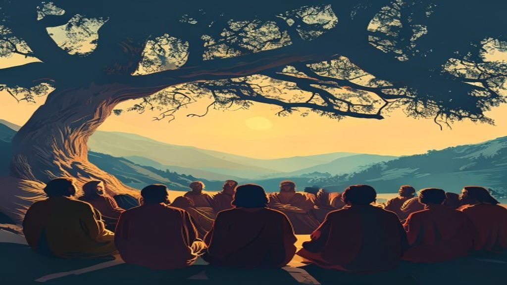
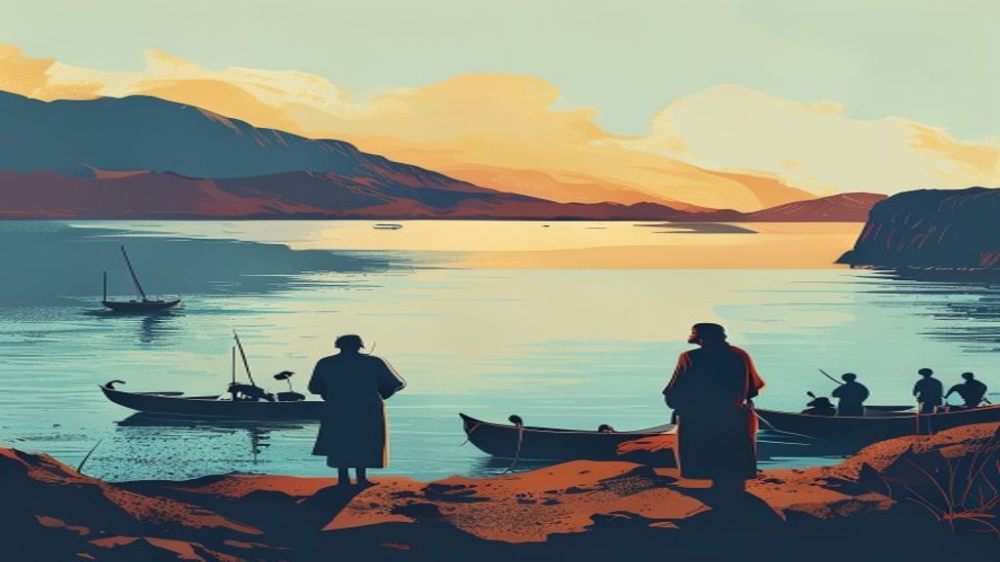
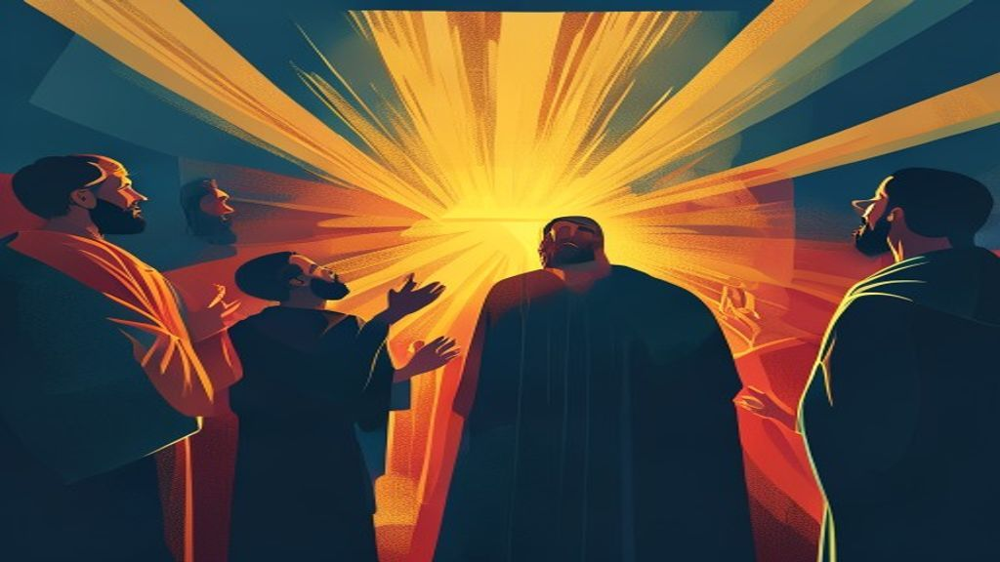
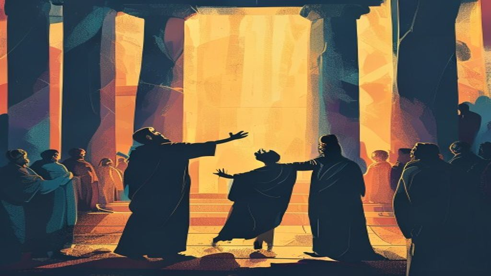
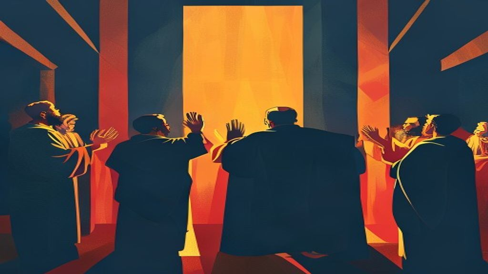
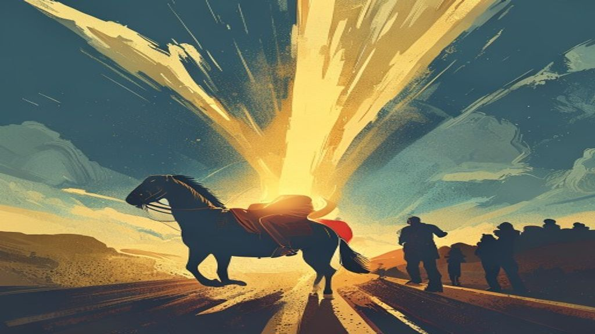
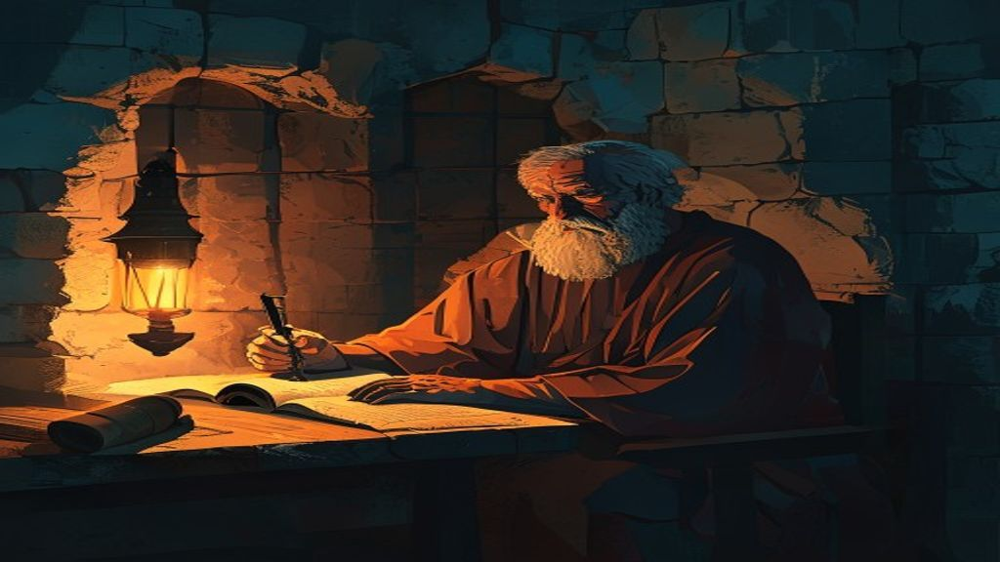

Y por qué nadie puede ser ungido apóstol hoy.

ἀπόστολος (apóstolos) proviene del griego y significa enviado. Un apóstol es un propagador o un predicador de la doctrina bíblica de la fe cristiana y del poder y del amor de Dios; es un evangelizador que tiene la misión de predicar de Jesucristo y de su obra redentora: su vida, su muerte y su resurrección.
Pero la palabra por sí sola no define el oficio. En su sentido más amplio, «apóstol» puede referirse a un mensajero (2 Corintios 8:23). El oficio apostólico — el de los doce y de Pablo — es otra cosa: exige credenciales que la Escritura enumera con precisión.

No los define una convención, un seminario ni una imposición de manos. Los define la Escritura. Y la Escritura exige tres cosas — las tres imposibles para cualquier persona viva hoy.
Este fue el criterio de Pedro para llenar la vacante de Judas: el sustituto tenía que haber visto al Señor resucitado. Sin ese testimonio presencial, no hay apostolado.


Las señales no eran un espectáculo: eran las credenciales del oficio. Pablo las llama, literalmente, «las señales de apóstol». Donde no hay señales de apóstol, no hay apóstol.
Ni congregación, ni concilio, ni otro apóstol: Cristo mismo eligió a cada uno. Hasta para llenar la vacante de Judas, la iglesia oró y echó suertes — porque la elección era del Señor, no de ellos.

El requisito de testigo ocular no quedó abierto. Pablo mismo registra la lista completa de apariciones del Cristo resucitado — y se coloca al final, como el último de todos.

Pablo no era de los doce. Fue llamado después de la ascensión, en el camino a Damasco. Pero mira cómo fue elegido: Cristo mismo le apareció, lo derribó con luz del cielo, y lo llamó «instrumento escogido» (Hechos 9:15). Cumplió los tres requisitos — y él mismo cerró la lista: «al último de todos… me apareció a mí».
«Y al último de todos, como a un abortivo, me apareció a mí.»
1 Corintios 15:8 · RVR1960Pablo no dice «el penúltimo». No dice «uno más en la fila». Dice «el último de todos». Si el requisito de haber visto al Cristo resucitado se agotó en Pablo, el oficio apostólico está cerrado — y ninguna «unción» moderna puede reabrirlo.
Efesios 4:11. Lo citan en cada «consagración apostólica.» Pero cortan el versículo en dos — y esconden lo que sigue.
«Y él mismo constituyó a unos, apóstoles; a otros, profetas; a otros, evangelistas; a otros, pastores y maestros…»
Efesios 4:11 — cortado aquí«…a fin de perfeccionar a los santos para la obra del ministerio, para la edificación del cuerpo de Cristo, hasta que todos lleguemos a la unidad de la fe y del conocimiento del Hijo de Dios…»
Efesios 4:12-13 — el «hasta» que escondenEse «hasta» lo cambia todo. Los dones de Efesios 4:11 no son una lista de oficios que se repiten en cada generación: fueron dados para el período fundacional — hasta que la iglesia llegara a la madurez. Citar el versículo 11 sin el 13 es como citar «y les dio de comer» y esconder «y quedaron saciados.»
«Ve, porque instrumento escogido me es éste, para llevar mi nombre en presencia de los gentiles…»
Hechos 9:15«El Dios de nuestros padres te ha escogido para que conozcas su voluntad, y veas al Justo, y oigas la voz de su boca.»
Hechos 22:14«…yo ni lo recibí ni lo aprendí de hombre alguno, sino por revelación de Jesucristo.»
Gálatas 1:12«…Dios, que me apartó desde el vientre de mi madre, y me llamó por su gracia…»
Gálatas 1:15Pablo cumplió los tres requisitos: vio a Cristo resucitado (Hechos 9:3-6), hizo señales de apóstol (2 Corintios 12:12), y fue escogido por Cristo mismo — «no de hombres ni por hombre» (Gálatas 1:1). Pablo no fue un precedente para apóstoles nuevos: fue el cerrojo.

El que más escribió sobre el apostolado fue también el que se declaró «el último de todos». Sus cartas — las que hoy se usan para reclamar el título — son las mismas que registran que la lista terminó con él.
Ninguno fue «ungido» por otro hombre en una plataforma. Todos fueron llamados por Cristo o cumplían los requisitos de testigo ocular. Y los cimientos están completos: «los doce nombres de los doce apóstoles del Cordero» (Apocalipsis 21:14). Número fijo. Cerrado. Si alguien hoy te dice que Efesios 4:11 le da derecho al título de apóstol, pregúntale por qué no te cita también el versículo 13.
Hoy abundan los pastores que quieren un título por encima de los demás pastores: se hacen llamar «apóstoles», buscan que se les rinda el trato del oficio más alto, y reciben «unciones apostólicas» de manos de otros hombres. Este estudio es para ustedes. No es un ataque: es un espejo.
La iglesia fue edificada sobre el fundamento de los apóstoles y profetas, siendo la principal piedra del ángulo Jesucristo mismo. No se pone fundamento dos veces.
Efesios 2:20El requisito de haber visto al Señor resucitado se agotó en Pablo: «al último de todos… me apareció a mí.» La lista de apariciones que legitiman el oficio está cerrada.
1 Corintios 15:8La fe fue dada una vez a los santos: no hay revelación nueva que abra de nuevo lo que la Escritura cerró. Ninguna «nueva unción» puede derogar un requisito bíblico.
Judas 1:3 · Hebreos 1:1-2Ni congregación, ni concilio, ni otro «apóstol» puede otorgar el oficio: el oficio solo lo otorga el Señor Jesucristo, y Él ya escogió a los Suyos.
Gálatas 1:1 · Hechos 1:24Cristo reprendió exactamente esa ambición: no busquéis que os llamen con títulos de superioridad, porque el que se enaltece será humillado, y el que se humilla será enaltecido.
Mateo 23:8-12La iglesia de Éfeso probó a los que se dicen ser apóstoles, y no lo son, y los halló mentirosos. Y Pablo no anduvo con rodeos: existen falsos apóstoles — y su fin será conforme a sus obras. Reclamar el título sin los requisitos no es un exceso de fe: la Escritura lo llama mentira y disfraz.
Apocalipsis 2:2 · 2 Corintios 11:13-15Apacentad la grey de Dios, no como teniendo señorío sobre los que están a vuestro cuidado, sino siendo ejemplos de la grey. El pastor fiel no necesita llamarse apóstol: necesita ser hallado fiel.
1 Pedro 5:1-3Marca cada casilla solo si el candidato puede comprobarlo con evidencia bíblica — como la exigía la iglesia de Éfeso. La carga de la prueba no es tuya: es de él.
Y si no puede marcarlas, no es apóstol — sin importar cuántas «unciones» haya recibido, cuántos lo llamen así, o cuántas iglesias lo consagren. La Escritura ya lo dijo: «los has hallado mentirosos.»
Cada título reclamado sin respaldo bíblico es una piedra de tropiezo en el camino de los sencillos que quieren ser salvos. El rebaño no necesita apóstoles nuevos: necesita pastores fieles que apacienten la grey de Dios siendo ejemplos, no teniendo señorío.
El pastorado bíblico ya es un llamado glorioso. No necesitas un título mayor para servir a Cristo con autoridad: necesitas ser hallado fiel. Deja que el título de apóstol descanse donde la Escritura lo dejó — con los que vieron al Señor resucitado.